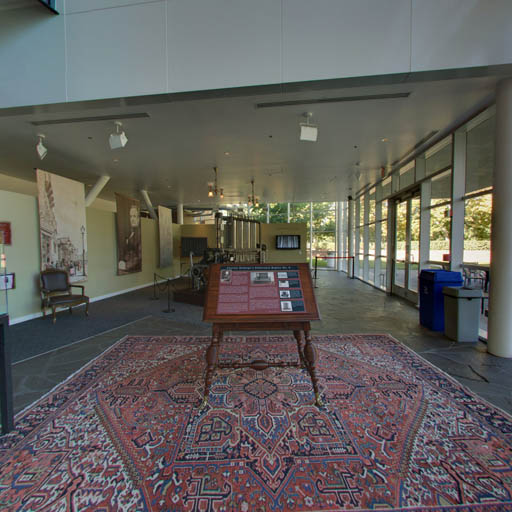
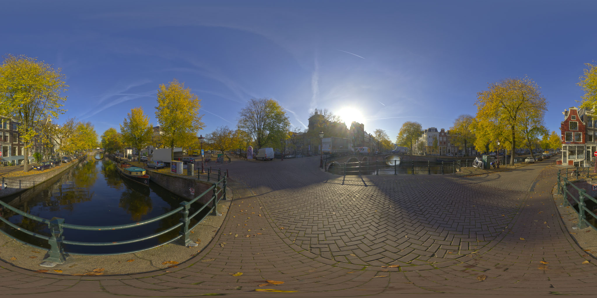

背景和天空盒
这里的大多数文章都使用纯色作为背景。
添加静态背景就像设置一些 CSS 一样简单。服用 有关使 THREE.js 响应式的文章中的示例 我们只需要改变两件事。
我们需要向画布添加一些CSS，以将其背景设置为图像
<style>
body {
margin: 0;
}
#c {
width: 100%;
height: 100%;
display: block;
+ background: url(resources/images/daikanyama.jpg) no-repeat center center;
+ background-size: cover;
}
</style>
并且我们需要告诉WebGLRenderer使用alpha，这样我们就不会
绘制任何东西都是透明的.
function main() {
const canvas = document.querySelector('#c');
- const renderer = new THREE.WebGLRenderer({antialias: true, canvas});
+ const renderer = new THREE.WebGLRenderer({
+ antialias: true,
+ canvas,
+ alpha: true,
+ });
我们得到一个背景.
如果我们希望背景能够受到后处理的影响 效果然后我们需要使用绘制背景 THREE.js.
THREE.js 使这变得非常简单。我们可以将场景的背景设置为 纹理。
const loader = new THREE.TextureLoader();
const bgTexture = loader.load('resources/images/daikanyama.jpg');
bgTexture.colorSpace = THREE.SRGBColorSpace;
scene.background = bgTexture;
这给了我们
这给我们一个背景图像，但它被拉伸以适合屏幕。
我们可以通过设置repeat和offset属性来解决这个问题
纹理仅显示图像的一部分。
function render(time) {
...
+ // Set the repeat and offset properties of the background texture
+ // to keep the image's aspect correct.
+ // Note the image may not have loaded yet.
+ const canvasAspect = canvas.clientWidth / canvas.clientHeight;
+ const imageAspect = bgTexture.image ? bgTexture.image.width / bgTexture.image.height : 1;
+ const aspect = imageAspect / canvasAspect;
+
+ bgTexture.offset.x = aspect > 1 ? (1 - 1 / aspect) / 2 : 0;
+ bgTexture.repeat.x = aspect > 1 ? 1 / aspect : 1;
+
+ bgTexture.offset.y = aspect > 1 ? 0 : (1 - aspect) / 2;
+ bgTexture.repeat.y = aspect > 1 ? 1 : aspect;
...
renderer.render(scene, camera);
requestAnimationFrame(render);
}
，现在 THREE.js 绘制背景。与以下没有明显区别 顶部的 CSS 版本，但现在如果我们使用 后处理 效果背景也会受到影响。
当然，静态背景通常不是我们在 3D 场景中想要的。相反 我们通常需要某种天空盒。天空盒就是这样，带有天空的盒子 在它上面画画。我们把相机放在盒子里，看起来里面有天空 背景.
实现天空盒最常见的方法是制作一个立方体，将纹理应用到
它，从里面画它。在立方体的每一侧放置一个纹理（使用
纹理坐标）看起来像地平线的某些图像。也经常有
通常使用天空球体或在其上绘制纹理的天空穹顶。你可以
也许你自己就能弄清楚这一点。只需制作一个立方体或球体，
应用纹理，将其标记为 THREE.BackSide 所以我们
渲染内部而不是外部，或者直接将其放入场景中
或者像上面那样，或者，制作 2 个场景，一个特殊的场景用于绘制天空盒/球体/圆顶和
正常的一个来画其他的东西。您可以使用普通的 PerspectiveCamera 来
画。不需要OrthographicCamera.
另一个解决方案是使用立方体贴图。立方体贴图是一种特殊的纹理 它有 6 个面，即立方体的面。而不是使用标准纹理 坐标它使用从中心向外的方向来决定位置 获取颜色。
这里是来自山区计算机历史博物馆的立方体贴图的 6 张图像 View, California.




要使用它们，我们使用 CubeTextureLoader 加载它们，然后将其用作
场景的背景。
{
const loader = new THREE.CubeTextureLoader();
const texture = loader.load([
'resources/images/cubemaps/computer-history-museum/pos-x.jpg',
'resources/images/cubemaps/computer-history-museum/neg-x.jpg',
'resources/images/cubemaps/computer-history-museum/pos-y.jpg',
'resources/images/cubemaps/computer-history-museum/neg-y.jpg',
'resources/images/cubemaps/computer-history-museum/pos-z.jpg',
'resources/images/cubemaps/computer-history-museum/neg-z.jpg',
]);
scene.background = texture;
}
在渲染时，我们不需要像上面那样调整纹理
function render(time) {
...
- // Set the repeat and offset properties of the background texture
- // to keep the image's aspect correct.
- // Note the image may not have loaded yet.
- const canvasAspect = canvas.clientWidth / canvas.clientHeight;
- const imageAspect = bgTexture.image ? bgTexture.image.width / bgTexture.image.height : 1;
- const aspect = imageAspect / canvasAspect;
-
- bgTexture.offset.x = aspect > 1 ? (1 - 1 / aspect) / 2 : 0;
- bgTexture.repeat.x = aspect > 1 ? 1 / aspect : 1;
-
- bgTexture.offset.y = aspect > 1 ? 0 : (1 - aspect) / 2;
- bgTexture.repeat.y = aspect > 1 ? 1 : aspect;
...
renderer.render(scene, camera);
requestAnimationFrame(render);
}
让我们添加一些控件，以便我们可以旋转相机。
import {OrbitControls} from 'three/addons/controls/OrbitControls.js';
const fov = 75; const aspect = 2; // the canvas default const near = 0.1; -const far = 5; +const far = 100; const camera = new THREE.PerspectiveCamera(fov, aspect, near, far); -camera.position.z = 2; +camera.position.z = 3; +const controls = new OrbitControls(camera, canvas); +controls.target.set(0, 0, 0); +controls.update();
并尝试一下。拖动示例以旋转相机并查看立方体贴图 围绕着我们。
另一个选择是使用等距柱状图。就是这样的图片a 360 度全景摄像头拍摄.

{
- const loader = new THREE.CubeTextureLoader();
- const texture = loader.load([
- 'resources/images/cubemaps/computer-history-museum/pos-x.jpg',
- 'resources/images/cubemaps/computer-history-museum/neg-x.jpg',
- 'resources/images/cubemaps/computer-history-museum/pos-y.jpg',
- 'resources/images/cubemaps/computer-history-museum/neg-y.jpg',
- 'resources/images/cubemaps/computer-history-museum/pos-z.jpg',
- 'resources/images/cubemaps/computer-history-museum/neg-z.jpg',
- ]);
- scene.background = texture;
+ const loader = new THREE.TextureLoader();
+ const texture = loader.load(
+ 'resources/images/equirectangularmaps/tears_of_steel_bridge_2k.jpg',
+ () => {
+ texture.mapping = THREE.EquirectangularReflectionMapping;
+ texture.colorSpace = THREE.SRGBColorSpace;
+ scene.background = texture;
+ });
}
这就是它的全部内容.
您还可以转换等距柱状图像，而不是在加载时执行此操作 预先到立方体贴图。 这是一个可以为您完成此操作的网站.